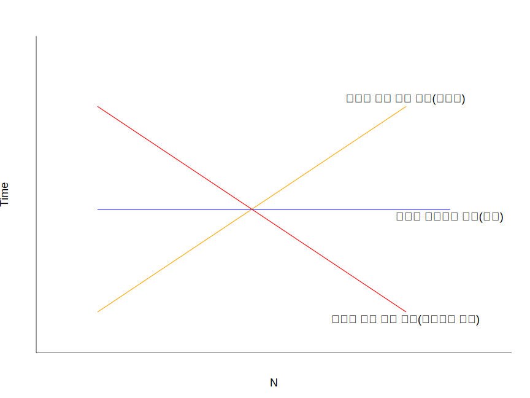

6.1 알고리즘(Algorithm)
어떤 주어진 문제를 해결하기 위해 정해진 일련의 절차 또는 방법을 절차화한 형태로 표현한 것으로 계산을 실행하기 위한 단계적 절차를 의미. 즉, 문제 해결에 필요한 계산 절차 또는 처리 과정의 순서를 의미함.
— Wikipedia 발췌 —
좋은 알고리즘의 특징
- 정밀성: 변하지 않는 명확한 작업 단계로 구성
- 유일성: 각 단계마다 명확한 다음 단계를 가져야 함
- 타당성: 구현할 수 있고 실용적
- 입력: 정의된 입력을 받을 수 있어야 함
- 출력: 답으로 출력을 내보낼 수 있어야 함
- 유한성: 특정 수의 작업 이후에 정지
- 일반성: 정의된 입력들에 대해 일반적으로 적용할 수 있어야 함
구현
자연어(natural language), 의사코드(pseudocode), 순서도(flow-chart), 프로그래밍 언어 등으로 표현할 수 있고, 정형적 단계는 다음과 같음
문제정의 \(\rightarrow\) 모델고안 \(\rightarrow\) 명세 작성 \(\rightarrow\) 설계 \(\rightarrow\) 검증 \(\rightarrow\) 분석 \(\rightarrow\) 구현 \(\rightarrow\) 테스트 \(\rightarrow\) 문서화
알고리즘의 성능
“알고리즘 성능”과 관련한 내용은 https://makemethink.tistory.com/105 에서 관련 내용을 참고해 재구성함
성능(performance/efficiency)
- 동일한 결과를 산출하는 알고리즘에도 차이가 존재
- 보통 그 차이는 알고리즘의 수행시간(자원, resource)과 밀접한 연관이 있음
- 예: 특정 학생의 전화번호 탐색 알고리즘(정답을 출력한다고 가정)
- A 알고리즘 수행 시간: 0.1초
- B 알고리즘 수행 시간: 1.0초
\(\rightarrow\) A 알고리즘이 더 효율적임
- 즉 성능은 동일한 결과를 도출하기 위해 필요한 자원(시간과 공간)의 크기
\[ \mathrm{performance} = \mathrm{\frac{solution}{resource}} \]
성능은 다음과 같은 측면으로 고려해볼 수 있음
- 최선(best)의 경우 \(\rightarrow\) 빠르면 1초 내에 전화번호 탐색
- 평균(average)의 경우 \(\rightarrow\) 평균 10 초 이내에 전화번호 탐색
- 최악(worst)의 경우 \(\rightarrow\) 아무리 늦어도 1분 이내 번호 탐색
일반적으로 성능은 최악의 경우를 상정함 \(\rightarrow\) 위의 예시에서 최악은 적어도 기대 시간이 1분 보다는 빠르기 때문에 위 두 가지를 모두 포괄
자원(resource)을 결정 짓는 요소
시간 복잡도(time complexity): 알고리즘 실행 완료 시 까지 걸린 시간
- 사칙연산(
+,-,*,\) - 비교연산(
>,<,==) - 반복(
for,while,repeat) - 함수호출
공간 복잡도(space complexity): 알고리즘 실행 완료를 위해 필요한 메모리(공간) 크기
- 변수 개수
- 데이터 구조
- 함수 호출
- 알고리즘 내 자료 재햘당 여부
일반적으로 시간이 공간보다 더 소중한 자원임
시간 복잡도 및 공간 복잡도 예
# 프로그램 1
x <- numeric(100)
for (i in seq_along(x)) {
x[i] <- i
}
# 프로그램 2
x <- NULL
for (i in 1:100) {
x <- c(x, i)
}프로그램 1의
for반복의 시간복잡도는 \(\mathcal{O}(n)\) 이고, 공간 복잡도의 경우 반복문 내에세 미리 정의한x벡터에 값을 할당하는 것이기 때문에 \(\mathcal{O}(1)\)프로그램 2의 경우에는 반복문 내에서
x의 저장공간이 반복에 따라 추가적으로 \(n\) 까지 증가하기 때문에 공간 복잡도는 \(\mathcal{O}(n)\)
알고리즘 성능의 점근적 분석
- 성능은 입력의 크기에 따라 결정됨
- \(n\)을 입력의 크기라고 할 때 시간 복잡도를 \(n\)에 대한 함수로 표현 \(\rightarrow\) \(f(n)\)
f(n)은 다음과 같은 형태를 가질 수 있음

시간 복잡도는 매우 큰 입력에 대해 측정하는데, 입력에 대한 함수 \(f(n)\) 보다 성능이 특정 입력보다 커지면 항상 나쁜 \(g(n)\)을 이용해 \(f(n)\)의 성능을 표현
- \(g(n)\)은 \(f(n)\) 보다 상상 성능이 나쁘다 \(\rightarrow\) \(f(n)\)의 최악
- 최악의 경우에도 \(f(n)\)은 \(g(n)\)보다 성능이 좋음
- \(f(n)\)의 상한은 \(g(n)\)임
- \(f(n) \leq g(n)\)
- 많이 사용되는 표준 함수 사용(예: 1, \(n\), \(\log n\), \(n^2\), \(n\log n\), \(2^n\))
- 예: \(g(n) = n^2\)
- \(f(n)\)은 어떤 경우에도 \(n^2\) 보다는 빠름
- \(f(n)\)의 최악의 경우가 \(n^2\) 임
- \(f(n)\)의 상한은 \(n^2\)
Big O notation (빅오 표기법)
- 어떤 함수의 증가 양상을 다른 함수와 비교하기 위한 점근 표기법(asymptotic notation)
중 하나
- 예: Big \(\Omega\) (하한), Big \(\Theta\) notation (평균)
- Big O는 점근적 상한에 대한 표기법
- 알고리즘의 복잡도를 단순화 하거나 무한급수의 뒷부분 간소화 할 때 사용
- 알고리즘의 효율성을 나타내기 위한 방법으로 시간 복잡도(실행시간)와 공간 복잡도(실행공간, 메모리)로 이루어짐.
수학적 정의
모든 정수 또는 실수 집합에서 정의한 \(n\)에 대한 실수 집합의 함수를 \(f\) 와 \(g\) 라고 하자. \(|f(x)| \leq C |g(x)|\)를 만족하는 상수 \(k~(x \geq k)\)와 \(C\) 가 존재할 때 \(f(x)\)은 \(\mathcal{O}(g(x))\) 이라고 나타낸다.
이 때, \(f(x)\)은 \(g(x)\)의 big-oh” 라고 읽는다.
Figure 6.1: https://johngrib.github.io/wiki/big-O-notation/ 에서 발췌
- 여기서 \(k\)와 \(C\)를 \(f(x)\)가 \(\mathcal{O}(g(x))\) 관계에 대한 증인(witness)라 부름
- 즉 \(f(x)\)가 \(\mathcal{O}(g(x))\) 라는 것을 증명하기 위해서는 위 정의를 만족하는 \(k\)와 \(C\)를 찾으면 됨
- 만약 \(k\), \(C\) 한 쌍이 존재하면 무수히 많은 \(k\)와 \(C\)가 존재함
- \(\mathcal{O}(g(n))\)은 \(g(n)\)의 증가율보다 작거나 같은 함수들의 집합임
- \(\mathcal{O}(n^2)\)은 \(\mathcal{O}(1)\), \(\mathcal{O}(n)\), \(\mathcal{O}(n\log n)\) 을 포함
- \(k\)의 최솟값은 \(Cg(x) \geq f(x)\) 인 지점
- \(C\)의 후보는 모든 실수이기 때문에 \(Cg(x)\)의 최고차항 차수가 \(f(x)\)의 최고차항의 차수보다 크거나 같다면 \(f(x)\)의 최고차항 계수는 그 값과 상관없이 \(Cg(x)\)의 증가율보다 클수 없음.
Big O 복잡도 도표


- 기울기가 높아질수록 성능이 시간이 오래 걸림 \(\rightarrow\) 효율이 떨어지므로 성능 또한 좋지 않음
- Big O의 차이에 따른 알고리즘 성능 비교
| N | \(\mathcal{O}(1)\) | \(\mathcal{O}(\log n)\) | \(\mathcal{O}(n)\) | \(\mathcal{O}(n\log n)\) | \(\mathcal{O}(n^2)\) | \(\mathcal{O}(2^n)\) | \(\mathcal{O}(n!)\) |
|---|---|---|---|---|---|---|---|
| 1 | 1 | 1 | 1 | 1 | 1 | 1 | 1 |
| 10 | 1 | 2 | 10 | 23 | 100 | 1024 | 3.63E+06 |
| 100 | 1 | 5 | 100 | 461 | 10000 | 1.27E10+30 | 9.33E10+157 |
Big O 표기법 규칙
극한의 성질
합의 법칙: \(\lim\limits_{x \to a} [f(x) + g(x)] = \lim\limits_{x \to a} f(x) + \lim\limits_{x \to a} g(x)\)
차의 법칙: \(\lim\limits_{x \to a} [f(x) - g(x)] = \lim\limits_{x \to a} f(x) - \lim\limits_{x \to a} g(x)\)
상수 곱의 법칙: \(\lim\limits_{x \to a} [cf(x)] = c\lim\limits_{x \to a} f(x)\)
곱의 법칙: \(\lim\limits_{x \to a} [f(x) \cdot g(x)] = \lim\limits_{x \to a} f(x) \cdot \lim\limits_{x \to a} g(x)\)
1. 계수 법칙
상수 \(C > 0\) 일 때, \(f(x) = \mathcal{O}(g(x))\) 이면 \(Cf(x) = \mathcal{O}(g(x))\)
- 입력의 크기 \(x\)가 무한대에 가까워 지는 경우 양수 \(C\)의 크기는 의미가 없음
- \(100 \infty = \infty\)
- Big O 표기는 정확한 수치를 나타내는 것이 아니기 때문에 중요하지 않은 항과 상수, 계수를 제거한 점근적 표기법(asymptotic notation) 임(drop non-dominants)
예제 1: \(f(x) = 6x^4 -2x^3 - 2x^2 + 5\)의 Big O를 구하시오.
\(k = 1\), \(C = 15\) 일 때,
\[ \begin{aligned} |6x^4 -2x^3 - 2x^2 + 5| &\leq 6x^4 +2|x^3| + 2x^2 + 5 \\ &\leq 6x^4 + 2x^4 + 2x^4 + 5x^4 \\ &= 15x^4 \end{aligned} \]
따라서 \(|6x^4 -2x^3 - 2x^2 + 5| \leq 15x^4\) 이기 때문에 \(f(x) = \mathcal{O}(x^4)\) 임.
직관적 풀이: 위 함수의 \(x\)에 매우 큰 값을 대입한 경우, 4차항 이하의 값은 점점 의미가 없어지기 때문에 중요한 것은 \(6x^4\) 임(). 따라서 \(\mathcal{O}(6x^4) = 6\mathcal{O}(x^4) = \mathcal{O}(x^4)\) 임.
예제 2: 아래 두 코드의 복잡도를 Big-O로 표시하시오.
# case 1
bigo_case1 <- function(n) {
sum <- 0
for (i in 1:n) {
sum <- sum + i
}
return(sum)
}
# case 2
bigo_case2 <- function(n) {
sum <- 0
for (i in 1:5*n) {
sum <- sum + i
}
return(sum)
}- case 1: \(\mathcal{O}(n)\)
- case 2: \(\mathcal{O}(5n) = 5\mathcal{O}(n) = \mathcal{O}(n)\)
2. 합의 법칙
\(f(x) = \mathcal{O}(h(x))\) 이고, \(g(y) = \mathcal{O}(p(x))\) 이면, \(f(x) + g(x) = O(h(x) + p(x))\) 이다.
- 두 함수의 입력항이 동일한지를 파악하는 것이 중요: 두 함수의 입력항이 같다면 1의 규칙에 따라 단순화가 가능하지만, 다른 경우 따로 표시를 해줘야만 함
예제 1: \(f(x) = 3x^2 + 5x + 3\), \(g(x) = 6x^2 + 20x + 45\) 일때 \(f(x) +g(x)\)의 Big O를 구하시오.
\(f(x) + g(x) = \mathcal{O}(3x^2 + 6x^2) = \mathcal{O}(9x^2) = \mathcal{O}(x^2)\)
예제 2: \(f(x) = 7x^4\), \(g(y) = 9y^2 + 6y + 1\) 일때 \(f(x) +g(y)\)의 Big O를 구하시오.
\(f(x) + g(y) = \mathcal{O}(7x^4) + \mathcal{O}(6y^2) = 7\mathcal{O}(x^4) + 6\mathcal{O}(y^2) = \mathcal{O}(x^4) + \mathcal{O}(y^2) = \mathcal{O}(x^4 + y^2)\)
예제 3 다음 함수의 시간 복잡도를 구하시오.
# case 3
bigo_case3 <- function(n) {
sum <- 0
for (i in 1:n) {
sum <- sum + i
}
for (i in 1:5*n) {
sum <- sum + i
}
return(sum)
}
#case 4
bigo_case4 <- function(n, m) {
sum <- 0
for (i in 1:n) {
sum <- sum + i
}
for (j in 1:m) {
sum <- sum + m
}
}- case 3: \(\mathcal{O}(n) + \mathcal{O}(5n) = \mathcal{O}(6n) = \mathcal{O}(n)\)
- case 4: \(\mathcal{O}(n) + \mathcal{O}(m) = \mathcal{O}(n + m)\)
3. 곱의 법칙
\(f(x) = \mathcal{O}(h(x))\)이고 \(g(x) = \mathcal{O}(p(x))\) 이면, \(f(x)\cdot g(x) = \mathcal{O}(h(x)\cdot p(x))\) 이다.
- 이중
for반복문이 대표적인 경우
bigo_case5 <- function(n) {
sum <- 0
for (i in 1:n) {
sum <- sum + i
for (j in 1:5*n) {
sum <- sum + j
}
}
return(sum)
}- case 5: \(\mathcal{O}(n \times 5n) = 5\mathcal{O}(n^2) = \mathcal{O}(n^2)\)